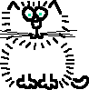

There should be two and a half cats on this page.
There should be two and a half cats on this page, too (and the ears of another cat barely visible at the bottom). The previous page ends with a cat's head, and this page starts with a cat's body.